Remote
RemoteStart here
Tool
Scraper RAM calculator
Estimate peak memory for your workload and the plan size that actually fits it — with the formulas shown.
Open the calculator →
Guide
RDP vs VPS vs dedicated
Three products, one decision: does your task need a desktop, a server, or hardware nobody else touches?
Read the guide →
Sizing
How much RAM a scraper needs
The four things that eat memory, in order — and why the fifth one is what actually kills the process.
Read the guide →Setup
A Windows VPS that survives the night
Autostart, sessions, updates and the three settings that decide whether your job is still running at 6am.
Read the guide →
Security
RDP security checklist
An exposed RDP port gets scanned within hours. The order to fix it, and what to do if you have already been hit.
Read the checklist →All articles
- 00 Scraper RAM calculator: how much memory your job needs →
- 01 RDP vs VPS vs dedicated: what your task actually needs →
- 02 How much RAM a scraper needs before it dies →
- 03 A Windows VPS for 24/7 automation, step by step →
- 04 RDP security checklist for a box on the public internet →
- 05 What running bots 24/7 actually costs per month →
What this site is
RemoteBox publishes hands-on notes about the machines behind data collection and automation: virtual servers, remote desktops, dedicated hardware, and the operational details that decide whether a job runs for a month or dies on the second night.
- We size for the workload, not for the vendor's upsell.
- We do not publish invented specs or prices. Where a figure is uncertain, we link to the vendor and say so.
- Affiliate relationships are disclosed and never decide placement.
Some links on this site are monetised. They carry
rel="sponsored" and never affect what is recommended.